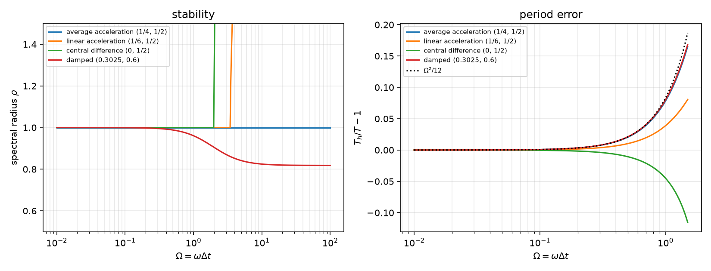
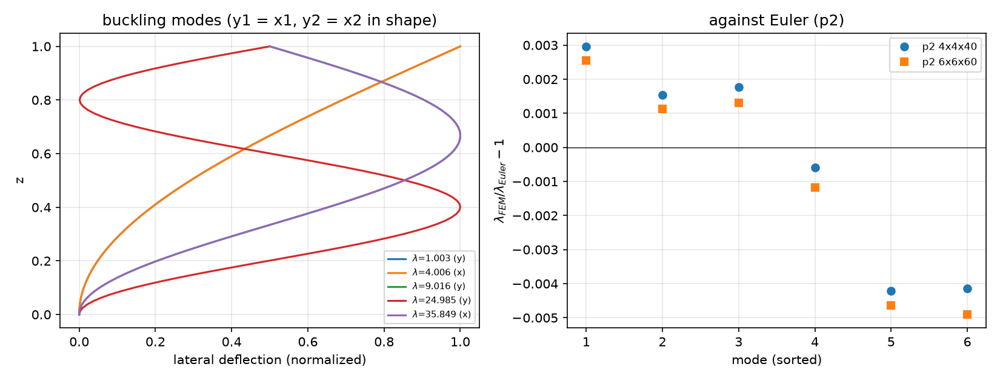
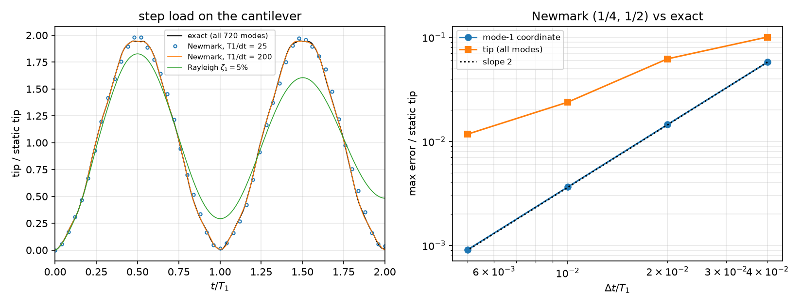

AI-based Materials and Process Simulation II
Week 06 — Structural Dynamics (Modes, Newmark, Rayleigh Damping) · Linear Buckling (SLEPc)
Process Systems Laboratory
Department of Chemical and Biomolecular Engineering, SeoulTech
Today
| Part | Topic | Time |
|---|---|---|
| Quiz on Week 5 (closed-AI) | 10 min | |
| A | Dynamics — M\ddot{\mathbf u}+C\dot{\mathbf u}+K\mathbf u=\mathbf f, modes, the Newmark family, stability and period error, Rayleigh damping | 50 min |
| B | Eigenproblems with SLEPc — natural frequencies, linear buckling, the geometric stiffness, shift-invert | 35 min |
| C | Verification — an exact semi-discrete solution, energy, damping ratio, Euler loads, the original sources re-run | 55 min |
| D | LLM pitfalls · assignment | 20 min |
Lab notebook: W06_lab.ipynb · Assignment: W06_HW6.ipynb (due before Week 7)
Week 5 in one slide
- Viscoelasticity: Prony series, exact J(t), the exponential scheme (exact for relaxation), an elastic step at 0^+, correspondence.
- Phase field: AT2, \sigma_{\max}=\frac{3\sqrt3}{16}\sqrt{EG_c/\ell}, the history field, a staggered loop that reports convergence, the notch in the mesh.
Today: time enters through inertia. The semi-discrete system is a set of oscillators; the time scheme must be stable for all of them and accurate for the ones we care about. Then the same matrices in an eigenproblem: frequencies and buckling loads with SLEPc.
Part A · Dynamics
The semi-discrete equations
M\ddot{\mathbf u}+C\dot{\mathbf u}+K\mathbf u=\mathbf f(t),\qquad M=\int_\Omega\rho\,\mathbf N^\top\mathbf N,\quad K=\int_\Omega\mathbf B^\top\mathbb C\,\mathbf B
- Modes: K\boldsymbol\phi_i=\omega_i^2M\boldsymbol\phi_i, \boldsymbol\phi_i^\top M\boldsymbol\phi_j=\delta_{ij}. With \mathbf u=\sum q_i\boldsymbol\phi_i the system splits into oscillators \ddot q_i+\omega_i^2q_i=\boldsymbol\phi_i^\top\mathbf f.
- Step load \mathbf f from t=0: q_i=\frac{\boldsymbol\phi_i^\top\mathbf f}{\omega_i^2}(1-\cos\omega_it) — every mode peaks at twice its static value.
- For a small mesh, all modes from dense matrices give the exact semi-discrete solution — a reference for the time scheme alone.
- The spectrum is wide: our cantilever (20\times4 P2, 720 unknowns) has \omega_1=524 and \omega_{\max}=2.0\times10^6 rad/s.
The Newmark family
\mathbf u_{n+1}=\mathbf u_n+\Delta t\,\dot{\mathbf u}_n+\Delta t^2\big[(\tfrac12-\beta)\ddot{\mathbf u}_n+\beta\ddot{\mathbf u}_{n+1}\big],\qquad \dot{\mathbf u}_{n+1}=\dot{\mathbf u}_n+\Delta t\big[(1-\gamma)\ddot{\mathbf u}_n+\gamma\ddot{\mathbf u}_{n+1}\big]
Predictor–corrector form: (M+\gamma\Delta t\,C+\beta\Delta t^2K)\,\ddot{\mathbf u}_{n+1}=\mathbf f_{n+1}-C\tilde{\dot{\mathbf u}}-K\tilde{\mathbf u} — one matrix, factorized once.
| (\beta,\gamma) | name | stability | accuracy |
|---|---|---|---|
| (\tfrac14,\tfrac12) | average acceleration (trapezoidal) | unconditional | 2nd order, no amplitude error, energy conserved |
| (\tfrac16,\tfrac12) | linear acceleration | \omega\Delta t\le\sqrt{12}=3.46 | 2nd order |
| (0,\tfrac12) | central difference | \omega\Delta t\le2 | 2nd order, explicit with a lumped M |
| \gamma>\tfrac12, \beta=\tfrac14(\gamma+\tfrac12)^2 | numerically damped | unconditional | 1st order |
The initial acceleration follows from the equation: M\ddot{\mathbf u}_0=\mathbf f_0-C\dot{\mathbf u}_0-K\mathbf u_0 (for a step load, \ddot{\mathbf u}_0=M^{-1}\mathbf f\ne0).
Stability and period error on one oscillator

The amplification matrix of one step (\Omega=\omega\Delta t). Central difference: \rho=1.000 at \Omega=1.99, 1.221 at 2.01. Average acceleration: \rho=1 for all \Omega (no damping, also none of the spurious high modes); period error \approx\Omega^2/12 (measured 1.00524 at T/\Delta t=25, formula 1.00526).
Rayleigh damping
C=\alpha_MM+\alpha_KK is diagonal in the modes: mode i gets
\zeta_i=\frac{\alpha_M}{2\omega_i}+\frac{\alpha_K\omega_i}{2}\qquad\Rightarrow\qquad \zeta_1=\zeta\ \text{ for }\ \alpha_M=\zeta\omega_1,\ \alpha_K=\zeta/\omega_1
- Not “\alpha_M=2\zeta\omega_1, \alpha_K=2\zeta/\omega_1” — that gives \zeta_1=2\zeta.
- The stiffness part grows with \omega: on our cantilever \zeta_{2,3,4}=0.15,\ 0.39,\ 0.40 — higher modes are damped hard (often wanted).
- Damped step response of one oscillator: peak 1+e^{-\zeta\pi/\sqrt{1-\zeta^2}}=1.8545 for \zeta=5\,\%.
Part B · Eigenproblems with SLEPc
Natural frequencies: shift-invert
K = assemble_matrix(k_form, bcs=[bc], diag=1.0); K.assemble() # BC rows: identity
M = assemble_matrix(m_form, bcs=[bc], diag=0.0); M.assemble() # BC rows: zero -> the BC "modes" go to infinity
eps = SLEPc.EPS().create(comm); eps.setOperators(K, M); eps.setProblemType(SLEPc.EPS.ProblemType.GHEP)
eps.setDimensions(6); eps.setTarget(0.0); eps.setWhichEigenpairs(SLEPc.EPS.Which.TARGET_MAGNITUDE)
st = eps.getST(); st.setType("sinvert"); st.getKSP().setType("preonly"); st.getKSP().getPC().setType("lu")
eps.solve(); lam = eps.getEigenpair(i, x) # omega = sqrt(lam)- Shift-invert at \sigma=0: Krylov on (K-\sigma M)^{-1}M — the smallest \omega become the largest eigenvalues, found in a few iterations.
diag=0.0on M: a constrained DOF has K_{ii}=1, M_{ii}=0 → \lambda=\infty, never near the target.- GHEP: K, M symmetric, M semi-definite — real eigenvalues, M-orthogonal vectors.
Which mode is which?
20\times4 P2 cantilever, L/H=10, plane stress, E=210 GPa, \rho=7800 kg/m³:
| # | \omega [rad/s] | axial share | Euler–Bernoulli | |
|---|---|---|---|---|
| 1 | 523.59 | 0.005 | 526.65 | bending 1 (−0.58 %) |
| 2 | 3141.78 | 0.03 | 3300.46 | bending 2 (−4.8 %) |
| 3 | 8161.80 | 1.00 | — | axial (exact \frac{\pi}{2L}\sqrt{E/\rho}=8150.46) |
| 4 | 8278.64 | 0.06 | 9241.39 | bending 3 (−10.4 %) |
- Mode 3 is not the third bending mode. Classify modes by their shape (here: the share of u_x^2), never by their index.
- Bending modes drift below Euler–Bernoulli as the wavelength shortens: shear and rotary inertia (Timoshenko). Mesh 80\times16: 523.17, 3138.48 — converged.
Linear buckling
Two steps: a pre-buckling solve under a reference load \mathbf f_{\rm ref} → stress \boldsymbol\sigma_0; then the load factor at which the stiffness becomes singular:
(K+\lambda K_G)\boldsymbol\phi=0,\qquad K_G(\mathbf u,\mathbf v)=\int_\Omega\boldsymbol\sigma_0:(\nabla\mathbf u\,\nabla\mathbf v^\top)\,dV=\int_\Omega\sigma^0_{ij}\,u_{k,i}\,v_{k,j}\,dV
- P_{\rm cr}=\lambda P_{\rm ref}. All three displacement components k appear: the lateral ones (k=x,y) are the ones that buckle.
- K_G is indefinite. Solve (-K_G)\boldsymbol\phi=\theta K\boldsymbol\phi with \theta=1/\lambda: K is positive definite (B matrix of a GHEP); the largest \theta = the smallest \lambda.
- Assemble -K_G with
diag=0.0on the BC rows: no spurious eigenvalues, no “diag = 1e-12” trick.
The column
Clamped–free, b\times h\times L=0.05\times0.025\times1 m, hexahedra, compressive traction on the top. Euler: P_n=\frac{(2n-1)^2\pi^2EI}{4L^2}; with P_{\rm ref}=P_1 (weak axis): \lambda = 1, 4, 9, 25, 36, 49 (deflection y, x, y, y, x, y).
| mesh | DOFs | \lambda_1 … \lambda_6 | time |
|---|---|---|---|
| P2 4\times4\times40 | 19683 | 1.0030, 4.0061, 9.0160, 24.985, 35.849, 48.797 | 2.0 s |
| P2 6\times6\times60 | 61347 | 1.0026, 4.0045, 9.0118, 24.970, 35.833, 48.760 | 10.9 s |
| P1 4\times4\times30 | 2325 | 1.7066, 4.7380, 15.377, 42.53, 42.81, 84.18 | 0.1 s |
- P1 hexahedra lock in bending (Week 1): +71 % on the first load.
- Pre-buckling check: u_z(L)=-1.28328\times10^{-4} m vs -PL/(EA)=-1.28510\times10^{-4} (the clamped base restrains the lateral contraction).
Below Euler is not an error

Modes 1–3 lie 0.1–0.3 % above Euler (discretization, falling with refinement); modes 4–6 up to 0.5 % below (and further below on the finer mesh): shorter waves feel shear deformation, P_E/(\kappa GA)=1.4\,\% for the x-2 mode (Engesser’s beam estimate \lambda=35.49).
Part C · Verification
The three modules
sdof.py (NumPy) |
dyn.py (DOLFINx, SLEPc) |
buckle.py (DOLFINx, SLEPc) |
|---|---|---|
amplification(Omega, beta, gamma, zeta) |
Cantilever(L, H, nx, ny, E, nu, rho, P, plane) |
Column(b, h, L, nx, ny, nz, E, nu, deg, kg) |
spectral_radius, period_ratio |
.static(), .modes(n) → (\omega,\boldsymbol\phi, axial share) |
.solve(nev) → (\lambda, axis, mode) |
integrate(w, dt, n, ...), step_exact |
.newmark(dt, n, beta, gamma, aM, aK, record) |
.euler(n, axis), .Pref, .u0 |
.dense_modal() (serial): the exact solution |
newmark works on PETSc vectors: predictor and corrector are axpys, the matrix M+\gamma\Delta tC+\beta\Delta t^2K is factorized once.
Newmark against the exact semi-discrete solution

| T_1/\Delta t | 25 | 50 | 100 | 200 |
|---|---|---|---|---|
| error, mode-1 coordinate | 5.8\times10^{-2} | 1.4\times10^{-2} | 3.6\times10^{-3} | 9.1\times10^{-4} |
| error, tip (all 720 modes) | 0.10 | 0.062 | 0.024 | 0.012 |
| \omega_{\max}\Delta t | 955 | 477 | 239 | 119 |
Reading the table
- The mode-1 coordinate converges at second order (factor 4 per halving). The tip converges slowly: it contains modes with \omega\Delta t\gg1 that no affordable \Delta t resolves. Average acceleration keeps them bounded (\rho=1) but with the wrong phase; their share of the tip is small.
- Dynamic amplification of the tip: exact 1.9476 — below 2 because the modes do not peak together; Newmark 1.983 / 1.992 / 1.960 / 1.948.
- Total energy \tfrac12\dot{\mathbf u}^\top M\dot{\mathbf u}+\tfrac12\mathbf u^\top K\mathbf u-\mathbf f^\top\mathbf u is conserved to 10^{-10} (relative to \mathbf f^\top\mathbf u_{\rm st}) — the trapezoidal rule is energy-conserving for linear systems. A drift is a bug.
- Damping \zeta_1=5\,\%: mode-1 peak 1.85455 vs 1.85447 (one oscillator); logarithmic decrement → \zeta=0.04998. The tip peaks at 1.827: the higher modes are damped harder.
The original sources, re-run on 0.11
Dynamics (cantilever, step load):
- Static reference FL^3/(3EI) (beam, E), model in plane strain: the FEM static deflection is 0.912 of it. Its “DAF 1.815 (should be ~2)” is 0.912\times1.99 — a reference error, not a dynamic one.
- Initial acceleration 0 for a step load; units “m” for millimetres; the tip node computed and then not used (the minimum over all u_y instead).
- Damping exercise: header “\alpha_M=2\zeta\omega_1, \alpha_K=2\zeta/\omega_1” (would give 2\zeta); the code uses \zeta\omega_1, \zeta/\omega_1 — correct. “Theory 1.85 vs 1.666” is again the static reference.
Buckling (the same column):
- Results reproduced to every digit (1.00296, 4.00614, 9.01598, 35.84856). The mode at 24.985 (the third weak-axis mode, Euler 25) is listed but left unexplained.
- “Using only \sigma_{zz} gives ~280 % error”: \sigma_{zz}u_{k,z}v_{k,z} (all k) gives 1.0026 / 4.0008 / 8.989 — within 0.04–1.6 %. What loses buckling is keeping only k=z (\lambda=7744).
- “−0.42 % error” for the x-2 mode: shear deformation, physics of the 3D model.
Part D · LLM pitfalls · assignment
What goes wrong in dynamics and eigenvalue codes
| Pitfall | Measured symptom (this week) |
|---|---|
| Static/beam reference with another 2D reduction than the model (plane strain vs E) | “DAF 1.815” instead of 1.99 |
| Initial acceleration set to 0 for a load applied at t=0 | the load arrives one step late; O(\Delta t) phase error |
| Rayleigh coefficients 2\zeta\omega_1, 2\zeta/\omega_1 | twice the intended damping |
| Modes numbered by index (“mode 3 = third bending mode”) | mode 3 is axial (99.97 % u_x^2) |
| Explicit scheme with \Delta t from the lowest frequency | central difference needs \omega_{\max}\Delta t\le2: here \Delta t\le1.0\,\mus, not T_1/100=120\,\mus |
A.convert("dense") to inspect a matrix |
in place: the PETSc matrix is now dense, MUMPS fails afterward — use A.convert("dense", B) |
f(obj.static().x.petsc_vec) |
the temporary Function is freed before use: segmentation fault — keep the Function in a variable |
| K_G with only the axial component, or BC rows “fixed” by tiny diagonals | no buckling (\lambda=7744) / spurious eigenvalues; use \sigma^0_{ij}u_{k,i}v_{k,j} and B=K |
Prompting for a dynamics or buckling model
- State the reduction and the reference together (plane stress ↔︎ beam theory with E; plane strain ↔︎ E/(1-\nu^2)).
- Ask for the modes first, classified by shape; set \Delta t from the modes you want to resolve, and check stability against \omega_{\max} for explicit schemes.
- Ask for a consistent initial acceleration and an energy (or log-decrement) check printed with the response.
- For buckling: the full geometric stiffness, K as the B matrix, a pre-buckling check (u_z=-PL/EA), modes matched to Euler by shape.
- Keep a small serial case with an exact semi-discrete or analytical answer next to every production run.
Assignment HW6 (due before Week 7)
| Q | Topic | Points |
|---|---|---|
| 1 | Newmark stability and period error, Rayleigh damping, the buckling eigenproblem (theory) | 20 |
| 2 | Dynamics: the explicit stability limit, a numerically damped scheme, slenderness and Euler–Bernoulli | 30 |
| 3 | Buckling: element order and mesh, slenderness and shear, which K_G | 30 |
| 4 | Debugging an LLM-generated Newmark script | 20 |
Week 7 starts with a 10-minute quiz on today’s material (closed-AI).
Summary
| Concept | Key point | DOLFINx 0.11 / SLEPc |
|---|---|---|
| Semi-discrete dynamics | modes decouple; step load: each mode peaks at 2× static | assemble_matrix(m, bcs, diag=0.0) |
| Newmark | (\tfrac14,\tfrac12): unconditional, energy-conserving, period error \Omega^2/12 | one factorization of M+\gamma\Delta tC+\beta\Delta t^2K |
| Explicit | central difference: \omega_{\max}\Delta t\le2 | \omega_{\max} from the eigen solver |
| Rayleigh | \zeta_i=\alpha_M/2\omega_i+\alpha_K\omega_i/2 | C=\alpha_MM+\alpha_KK |
| Frequencies | shift-invert at 0; classify by shape | EPS, GHEP, ST sinvert |
| Buckling | \sigma^0_{ij}u_{k,i}v_{k,j}; (-K_G)\phi=\theta K\phi | GHEP with B=K |
Next week: beams — trusses, 3D Timoshenko beams, finite rotations.